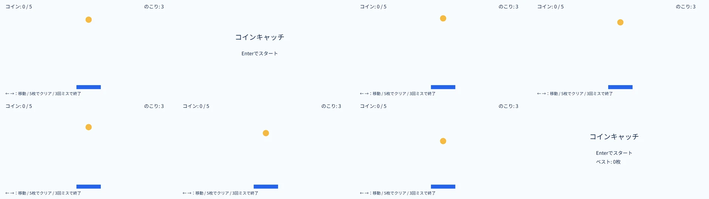
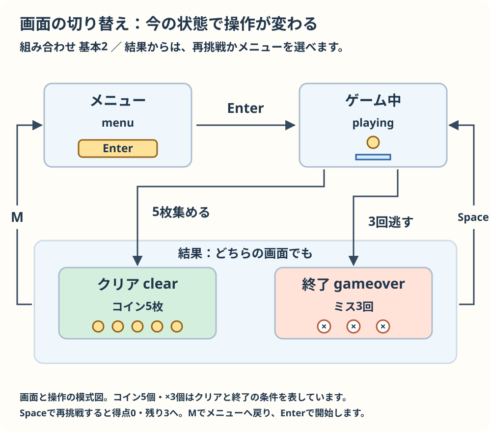

コインキャッチに機能を組み合わせる
基本編の完成版から始めます。ZIPを展開してできたフォルダーでindex.htmlを開きます。
WindowsでZIPを展開する（動画）
各ステップを上から順に行い、保存後に作業用フォルダーのindex.htmlを再読み込みします。自分で作った基本版でも同じ内容なら使えます。
ステップ 1：メニューから始める
このステップの見本を図で見る

このステップの見本
let gameState = "playing";
変わったコードの一例（script.js）let gameState = "menu";
見本で確かめること
最初はメニューが見え、Enterでゲームが始まります。
次の小作業を順に進めます。
最初にメニューを選ぶ
先頭の状態を決める行を置き換えます。
置き換える範囲
let gameState = "playing";置き換えるコード
let gameState = "menu";gameState は今の画面の状態です。最初はメニューにします。
Enterでゲームを始める
handleKeyDown(event) の最初の行の下に追加します。
この行の後に追加
function handleKeyDown(event) {追加するコード
if (gameState === "menu" && event.code === "Enter") {
start();
return;
}メニュー中にEnterを押すと start() で位置と得点を初期化し、return でこのキーの処理を終えます。
左キーはプレイ中だけ受け付ける
同じ関数の左キーの条件と入力を記録する行を置き換えます。
置き換える範囲
if (event.code === "ArrowLeft") {
leftPressed = true;置き換えるコード
if (gameState === "playing" && event.code === "ArrowLeft") {
leftPressed = true;&& は両方の条件が必要です。メニュー中は左へ動きません。
右キーもプレイ中だけ受け付ける
同じ関数の右キーの条件と入力を記録する行を置き換えます。
置き換える範囲
if (event.code === "ArrowRight") {
rightPressed = true;置き換えるコード
if (gameState === "playing" && event.code === "ArrowRight") {
rightPressed = true;右キーもプレイ中だけ移動を受け付けます。
Spaceで再挑戦できる状態を選ぶ
handleKeyDown() のSpace内にある条件を置き換えます。
置き換える範囲
if (gameState !== "playing") {置き換えるコード
if (gameState === "clear" || gameState === "gameover") {|| はどちらかの条件が成り立つときです。クリアかゲームオーバーならSpaceで再挑戦します。
メニューを描く
draw() の画面を消す行の下に追加します。
この行の後に追加
ctx.clearRect(0, 0, canvas.width, canvas.height);追加するコード
if (gameState === "menu") {
ctx.fillStyle = "#172b4d";
ctx.font = "32px sans-serif";
ctx.fillText("コインキャッチ", 260, 180);
ctx.font = "22px sans-serif";
ctx.fillText("Enterでスタート", 290, 250);
return;
}メニュー中はタイトルと開始方法を描き、return でその後のゲーム画面を描かずに終えます。
初回はメニューから始める
ファイル末尾の次の2行を置き換えます。
置き換える範囲
start();
gameLoop();置き換えるコード
gameLoop();初回の start() は実行せずメニューを表示します。Enterで start() を呼びます。ゲームループは1回だけ始めます。
保存後の確かめ方
保存してゲーム画面を更新する（動画）
index.html を再読み込みします。最初はメニューが見え、Enterでゲームが始まります。 この段階の見本を開く
ステップ 2：結果画面から選ぶ
このステップの見本を図で見る
score=0、lives=3、playing
得点と残り回数を両方戻す。
gameState=menu、入力を解除
動きを止めたままメニューに戻る。
ゲーム画面とコードの前後を見る
このステップの見本
ctx.fillText("Space キーでもう一度", canvas.width / 2, 295);
変わったコードの一例（script.js）ctx.fillText("Space: もう一度 / M: メニュー", canvas.width / 2, 295);
見本で確かめること
結果でSpaceとMを試し、再挑戦で得点が0になることを確かめます。
次の小作業を順に進めます。
結果からメニューに戻す
handleKeyDown() のSpaceの条件のすぐ上に追加します。
この行の前に追加
if (event.code === "Space") {追加するコード
if ((gameState === "clear" || gameState === "gameover") && event.code === "KeyM") {
clearKeys();
gameState = "menu";
return;
}クリアかゲームオーバーでMを押すと、入力を解除してメニューに戻ります。

画面の状態ごとに、受け付ける操作を分けます。5枚集めるとクリア、3回逃すと終了です。結果でSpaceを押すと得点0・残り3から再挑戦し、Mならメニューへ戻ります。
結果画面に戻り方を表示する
draw() の結果画面の操作案内を置き換えます。
置き換える範囲
ctx.fillText("Space キーでもう一度", canvas.width / 2, 295);置き換えるコード
ctx.fillText("Space: もう一度 / M: メニュー", canvas.width / 2, 295);Spaceで再挑戦、Mでメニューに戻ることを表示します。
保存後の確かめ方
結果でSpaceとMを試し、再挑戦で得点が0になることを確かめます。 この段階の見本を開く
ステップ 3：ベストを保存する
このステップの見本を図で見る
max(3,5)=5 → "5"を保存
新記録5枚を次のメニューでも表示。
max(5,2)=5 → "5"を保存
今回少なくてもベストは下がらない。
ゲーム画面とコードの前後を見る
このステップの見本
この行を足す前 変わったコードの一例（script.js）
if (value === null || !/^[0-9]+$/.test(value)) return 0;
見本で確かめること
記録を作り、再読み込み後のメニューに表示されるか確かめます。
次の小作業を順に進めます。
保存したベストを読み取る
start() の行のすぐ上に追加します。
この行の前に追加
function start() {追加するコード
function readBest() {
try {
const value = localStorage.getItem(bestKey);
if (value === null || !/^[0-9]+$/.test(value)) return 0;
const number = Number(value);
return Number.isSafeInteger(number) && number >= 0 && number <= targetScore ? number : 0;
} catch (error) {
return 0;
}
}localStorage から値を読み、数字だけの文字列か、0から目標点までの安全な整数かを確かめます。保存がない、値が不正、読み取れない場合は0です。
ベストを覚える変数を追加する
先頭の gameState 宣言の下に追加します。
この行の後に追加
let gameState = "menu";追加するコード
const bestKey = "learning-combined-coin-best-v1";
let bestScore = readBest();bestKey は保存場所の名前です。readBest() で以前のベストを読みます。
終了時にベストを更新する
start() の行のすぐ上に追加します。
この行の前に追加
function start() {追加するコード
function finishGame(result) {
gameState = result;
clearKeys();
bestScore = Math.max(bestScore, score);
try {
localStorage.setItem(bestKey, String(bestScore));
} catch (error) {
}
}終了状態を設定し、入力を解除します。Math.max でこれまでのベストと今回の得点の大きい方を選び、文字にして保存します。保存できない場合もゲームは続きます。
クリア時に保存する
update() のクリア時の状態変更を置き換えます。
置き換える範囲
gameState = "clear";置き換えるコード
finishGame("clear");finishGame("clear") がクリア状態にし、ベストを更新します。
ゲームオーバー時も保存する
update() のゲームオーバー時の状態変更を置き換えます。
置き換える範囲
gameState = "gameover";置き換えるコード
finishGame("gameover");ゲームオーバーのときも同じ関数で状態とベストを更新します。
メニューにベストを表示する
draw() のメニューの開始案内の下に追加します。
この行の後に追加
ctx.fillText("Enterでスタート", 290, 250);追加するコード
ctx.fillText("ベスト: " + bestScore + "枚", 290, 290);文字列と bestScore をつなぎ、これまでのベストを表示します。
結果にもベストを表示する
draw() の結果画面の得点表示を置き換えます。
置き換える範囲
ctx.fillText("集めたコイン: " + score + " 枚", canvas.width / 2, 245);置き換えるコード
ctx.fillText("集めたコイン: " + score + " 枚 / ベスト: " + bestScore + " 枚", canvas.width / 2, 245);今回の得点とベストを並べて表示します。
保存後の確かめ方
記録を作り、再読み込み後のメニューに表示されるか確かめます。保存を拒否する環境でもプレイできます。 この段階の見本を開く
ステップ 4：コインを画像に替える
このステップの見本を図で見る
14×2=28、左上=(coinX-14,coinY-14)
中心と大きさを円に合わせる。
else → 円を描く
見た目が円でも同じルールで遊べる。
ゲーム画面とコードの前後を見る
このステップの見本
ctx.beginPath();
変わったコードの一例（script.js）ctx.drawImage(coinImage, coinX - coinRadius, coinY - coinRadius, coinRadius * 2, coinRadius * 2);
見本で確かめること
コイン画像が表示されます。
次の小作業を順に進めます。
作業用フォルダーにassetsフォルダーを作り、コインの画像をダウンロードして、その中に保存します。assets/coin.pngを同じ名前の正方形PNGに替えると自分の絵を表示できます。別の名前にした場合はsrcも変えます。見本の64×64画像には透明な余白があるため、28×28の画像枠の内側に金色の絵が見えます。当たり判定は画像の透明部分に関係なく半径14のままです。

コイン画像の読み込みを始める
先頭のベストの変数の下に追加します。
この行の後に追加
let bestScore = readBest();追加するコード
const coinImage = new Image();
let coinImageReady = false;
coinImage.onload = () => { coinImageReady = coinImage.naturalWidth > 0 && coinImage.naturalHeight > 0; };
coinImage.onerror = () => { coinImageReady = false; };
coinImage.src = "assets/coin.png";new Image() で画像を用意し、読み込めたときは元の幅と高さが0より大きいかを確認します。失敗したときは false のままにします。処理を決めてから画像の場所を指定します。
画像か丸を描く
draw() のコインを描く4行を置き換えます。
置き換える範囲
ctx.fillStyle = "#f5b942";
ctx.beginPath();
ctx.arc(coinX, coinY, coinRadius, 0, Math.PI * 2);
ctx.fill();置き換えるコード
if (coinImageReady) {
ctx.drawImage(coinImage, coinX - coinRadius, coinY - coinRadius, coinRadius * 2, coinRadius * 2);
} else {
ctx.fillStyle = "#f5b942";
ctx.beginPath();
ctx.arc(coinX, coinY, coinRadius, 0, Math.PI * 2);
ctx.fill();
}画像が準備できたら中心から半径分だけ左上にずらして、直径の幅・高さで描きます。半径14なので画像枠は28×28です。元の64×64画像には透明な余白があり、金色の絵は画像枠の内側に見えます。読み込み中や失敗時は元の金色の丸を描きます。
保存後の確かめ方
コイン画像が表示されます。画像の名前を一時的に変えると円のまま遊べます。 この段階の見本を開く
組み合わせるときの確認
変数や関数の名前がすでにあるときは同じ名前をもう一つ作らず、役割を確認して既存の処理に統合します。gameLoopは増やさず、start・update・drawを使います。画面の状態を見て、その画面の操作だけを受け付けます。
保存はこの教材専用のキーを使います。保存が拒否されたり、保存した値が壊れたりしてもゲームを続けられます。画像を表示する大きさと当たり判定は別です。